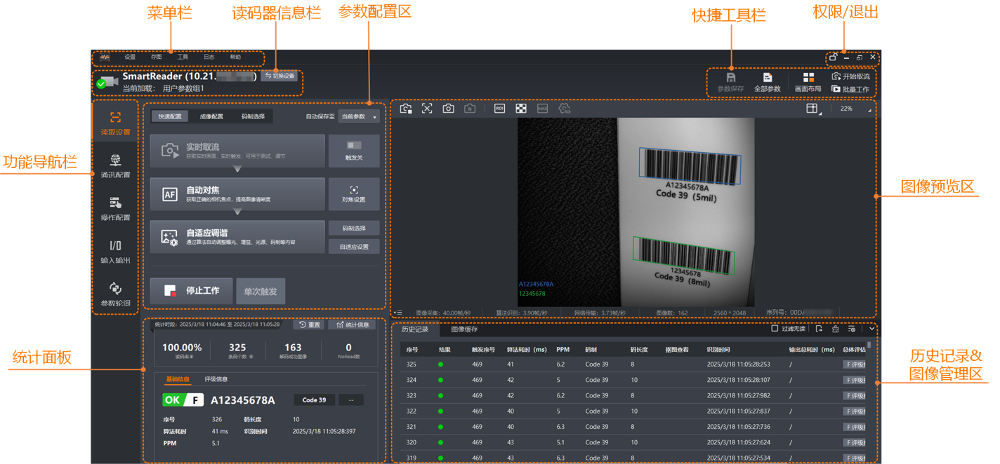
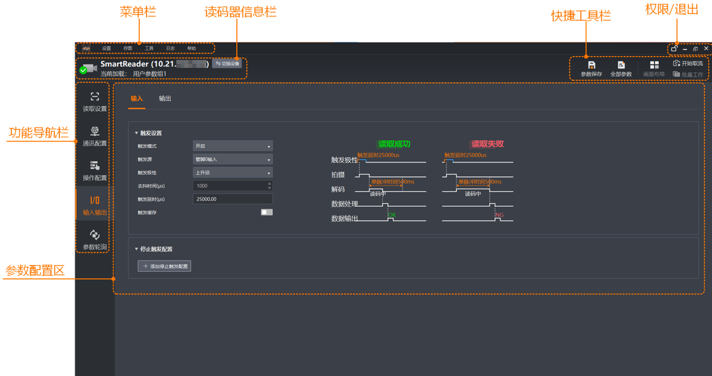

主界面
本章节介绍IDMVS的主界面。
连接读码器后，IDMVS不同功能板块的主界面将存在差异。
-
读取设置主界面如下图所示。

图 1 读取设置的主界面 -
输入输出主界面如下图所示。

图 2 输入输出的主界面
菜单栏
通过菜单栏您可进行IDMVS基础设置、IDMVS或读码器存图、使用工具、查看日志、查看IDMVS基本信息等。
读码器信息栏
不同情况下，此处显示的信息有所差异。
-
未连接读码器时，单击在弹出的设备列表中添加读码器。
-
连接读码器后，可查看当前连接读码器的基本信息，并进行相关操作。
-
单击可切换连接的读码器，双击目标读码器即可。
-
当前加载：显示当前加载的参数组，通过快捷工具栏的可进行切换，详情参见保存参数章节。
-
 可进行切换，详情参见
可进行切换，详情参见快捷工具栏
可对读码器部分功能进行快速操作。
-
参数保存：可将当前参数保存到特定参数组中，也可设置加载哪个参数组，详情参见保存参数章节。
-
全部参数：可查看并设置当前读码器的所有参数。
说明-
该功能仅建议在读码器无法通过IDMVS的其他区域完成相关设置时使用。
-
本文针对读码器的所有参数不做详细展开。如需了解详情，可查阅对应系列读码器的用户手册或咨询本公司技术支持。
-
-
画面布局：可设置图像预览窗口的画面布局，详情参见设置画面布局章节。
-
开始取流：可通过该按钮对当前读码器开始或停止采集图像。在客户端其他页面也可通过该按钮操作。
-
批量工作：连接多个读码器时，可通过该按钮对所有读码器以工作模式批量开始或停止工作。
如需使用批量工作功能，推荐将图像预览窗口设置为多画面，并将每个读码器与各个画面绑定，方便实时查看每个读码器的图像。
功能导航栏
通过功能导航栏，可切换读码器的具体功能设置。
功能导航栏分为以下5部分：
参数配置区
您可通过参数配置区对读码器进行相关设置。
功能导航栏选择的功能不同，可设置的参数将有所差异。
图像预览区
选择读取设置时，您可通过图像预览区查看读码器实时图像及读取结果。详情参见预览图像章节。
统计面板
选择读取设置时，您可通过统计面板查看读码器读码相关统计信息。详情参见查看读码结果章节。
历史记录&图像管理区
选择读取设置时，您可通过历史记录&图像管理区对读码器进行以下操作。
权限/退出
-
：该功能仅在开启权限时显示。可通过密码进行锁定或解锁。
说明未开启权限时，IDMVS属于解锁状态，所有功能均支持操作。
-
：可将IDMVS最小化。
-
/：可将IDMVS最大化/向下还原。
-
：可关闭IDMVS。
 ：可关闭IDMVS。
：可关闭IDMVS。